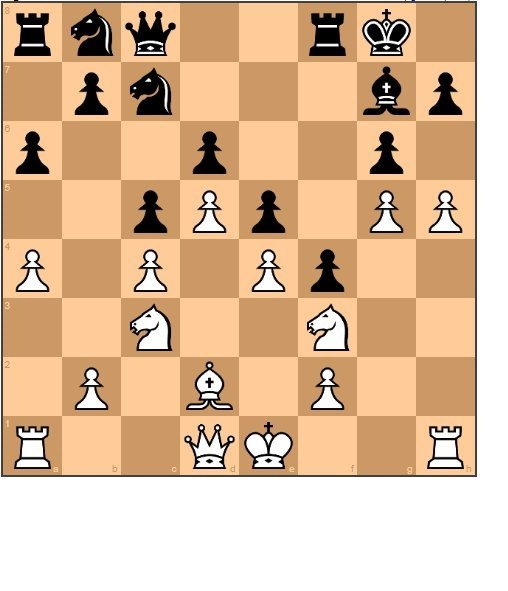

Chessboard Position Evaluation using a CNN
Summary
The purpose of this project was to implement a CNN trained on chessboard positions and their Stockfish evaluation in an attempt to mimic the evaluator. The CNN is provided all the pieces, represented by 8x8 'bitboards', as well as all available moves for each player. This allows the network to train more on strategic moves rather than wasting time learning the actual rules of chess.
The results were promising on evaluating basic chessboard positions, until I realized I was not evaluating any positions containing checkmate. This would prevent the network from learning what rules ultimately lead to a victory and the highest evaluation score. I began to generate datasets with very high evaluation scores assigned to checkmate scenarios, but as the network began to learn checkmate scenarios, it got worse at evaluating basic scenarios.
More work needs to be done to determine the correct evaluation to assign to checkmates that allows the network to learn both checkmate scenarios as well as basic position evaluations.
Once the evaluator network is completed, I can use the evaluation to improve the results of a Monte-Carlo tree search in a project to be worked on at a later date. You can view the Github project here:
How It Works
The Dataset
 The image to the left demonstrates what a bitboard is - a bit representation of a piece location in an 8x8 matrix of zeros. For this project, the dataset contains fourteen bitboards - twelve bitboards represent the six pieces of each color, with the remaining two bitboards containing all the possible moves for white and black.
The image to the left demonstrates what a bitboard is - a bit representation of a piece location in an 8x8 matrix of zeros. For this project, the dataset contains fourteen bitboards - twelve bitboards represent the six pieces of each color, with the remaining two bitboards containing all the possible moves for white and black. Giving the network information about piece count and piece location is useful for determining which player has the point and position advantage, and giving the network information about where the pieces can move allows the network to begin to understand a bit of the strategy of chess.
Results
Before generating positions that included checkmate, the network had reliable accuracy at evaluating chessboard position alone. However, once I included checkmate positions in the dataset, the accuracy of the network went down dramatically. This is because the value I assigned checkmate was too high, and can be solved with some normalization of the training data.
Before continuing, a better value needs to be assigned to checkmate. I also need to generate some figures that show model accuracy vs. training time.